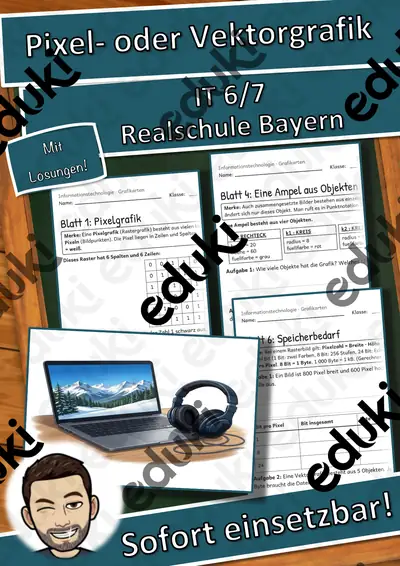
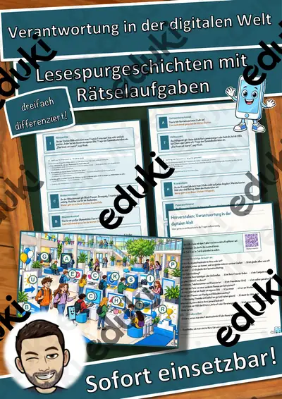
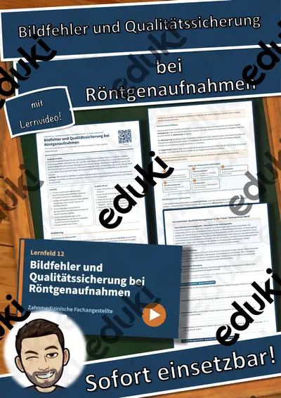

Digitale Kunst – vom Pixel zur Projektion – Lesespurgeschichte mit Rätselaufgaben (Klasse 10)
Digitale Kunst – vom Pixel zur Projektion – Lesespurgeschichte Kunst (Klasse 10)Begib dich mit deiner Klasse auf eine spannende Lesespur durch die Welt der digitalen Kunst! Leni und Noah besuchen mit ihrem Kunstkurs ein Medienkunstfestival in einer alten Fabrikhalle: An der Pixelwand lernen sie Pixel und Auflösung kennen, im Codelabor entstehen Bilder nach programmierten Regeln, im Projektionsraum verwandelt Projection Mapping ein Gebäude in eine Leinwand, in der Glitchgalerie werden Bildfehler zur Kunst. Im Brillenraum tauchen sie mit Virtual Reality in ein Kunstwerk ein, im Maschinenatelier diskutieren sie, wem ein KI-Bild gehört und warum es gekennzeichnet werden soll, im Interaktivraum macht das Publikum das Werk mit, im Archivraum erfahren sie, wie schnell digitale Kunst verloren gehen kann – und in der Medienwerkstatt gestalten alle selbst. Ihr Pixelwürfel Pixi ist immer dabei. Am Ende jedes Abschnitts verrät ein Hinweis den nächsten Ort auf dem Hallenplan – nur wer genau liest, findet den Weg und sammelt alle geheimen Buchstaben zum Lösungswort.
Die perfekte Lesespur für den KUNSTUNTERRICHT der 10. Klasse – ideal als Einstieg in die Unterrichtseinheit Neue Medien und digitale Bildwelten: Sie verbindet sinnentnehmendes Lesen mit Fachbegriffen, Kunstformen und einer sachlichen Auseinandersetzung mit KI-Bildern. Das Material ist SOFORT EINSETZBAR und in DREI DIFFERENZIERUNGSSTUFEN (leicht ★ / mittel ★★ / schwer ★★★) angelegt.WICHTIG: Das komplette Material ist sowohl in FARBE als auch in SCHWARZ-WEISS enthalten – ideal zum Sparen von Druckkosten.DAS IST ENTHALTEN
- Lesespurgeschichte in 3 Niveaus (leicht, mittel, schwer)
- farbiger Hallenplan als Suchkarte
- Hörverstehen mit QR-Code zur MP3 (selbstständiges Hören mit Kopfhörern)
- vier Aufträge auf dem Weg: eine Begriffszuordnung, ein Quiz, eine Rechenaufgabe (Raster, Bit) und ein Steckbrief
- Rätselseite (Wörter-Suchsel + Fragen)
- Ausmalbild zum Thema (Jugendliche in einer virtuellen Formenwelt)
- ausführliches Lösungsblatt für die Lehrkraft
- alles zusätzlich als komplette Schwarz-Weiß-VarianteSO GEHT DIE LESESPURDie Jugendlichen lesen ab START, finden im Text den nächsten Ort, suchen ihn auf dem Hallenplan und lesen bei dieser Station weiter. An jeder richtigen Station gibt es einen Buchstaben. Eingebaute Sackgassen (Ticketschalter, Kantine, Serverraum, Notausgang) sind keine Stationen und dienen der Selbstkontrolle. Am Ende werden die gesammelten Buchstaben umgestellt und ergeben ein geheimes Lösungswort. (Die Lösungen sind selbstverständlich nur im Lösungsblatt für die Lehrkraft enthalten.)INHALTLICHER SCHWERPUNKTDie Jugendlichen lernen Grundbegriffe digitaler Bilder (Pixel, Auflösung, Raster- und Vektorgrafik) kennen, unterscheiden generative Kunst, Projection Mapping, Glitch Art, Virtual Reality und interaktive Installationen, lernen Pionierinnen und Pioniere der Computerkunst kennen, beurteilen Urheberschaft und Kennzeichnung KI-generierter Bilder und erfahren, warum die Erhaltung digitaler Kunst eine besondere Herausforderung ist.ABGEDECKTER LEHRPLAN (Klasse 10, Kunst)
- Kunst (LehrplanPLUS Bayern) – Jahrgangsstufe 10 „Neue Medien / digitale Bildwelten“: Grundbegriffe digitaler Bilder kennen, Formen digitaler Kunst unterscheiden, KI-generierte Bilder kritisch beurteilen und eigene digitale Gestaltungen entwickeln.
- Deutsch – Lesen und mit Texten umgehen: Sachinformationen gezielt entnehmen und bewerten; Zuhören: einem Sachhörtext konzentriert folgen (Hörverstehen mit MP3).
- Mathematik – Multiplikation, Potenzen (Binärsystem).
- Fächerübergreifend / Kompetenzen: Informatik (Algorithmus, Bit), Medienbildung, Urheberrecht, genaues Lesen und Prüfen, kreatives Gestalten (Ausmalbild).
Geeignet für Freiarbeit, Stationenlernen, Vertretungsstunden, Wochenplan, Projekttage und Distanzunterricht. Klassenstufe 10.
Ähnliche Materialien

Pixel- oder Vektorgrafik: Grafikarten im Vergleich – Arbeitsheft mit Lösungen (IT 6/7, Realschule)

Sternbilder Projektion - Materialpaket - Sternbildsucher #edukiknaller2021

Verantwortung in der digitalen Welt – Lesespurgeschichte mit Rätselaufgaben (Klasse 8)

LF 12 Zahnmedizinische Fachangestellte: Bildfehler und Qualitätssicherung bei Röntgenaufnahmen – Übungen, Lösungen + Ler

Atlas Lückentext mit Wortspeicher Hörverstehen und Suchsel

Der Hackathon – im Team eine digitale Idee entwickeln – Lesespurgeschichte mit Rätselaufgaben (Klasse 10)

Fernsehen Lückentext mit Wortspeicher Hörverstehen und Suchsel